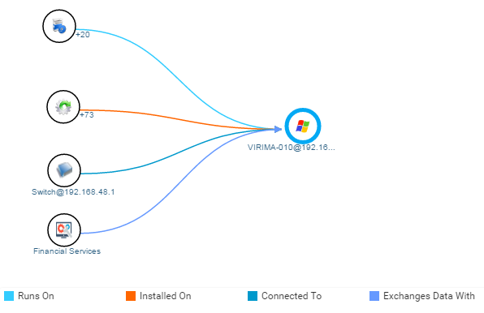

Service Map: Network View
In the example figure below:
20 CI’s of type Software Instance Run On the Host (Virirma-010
73 CI’s of type Installed Software Installed On the Host
CI of type Switch is Connected To a Host.
| To rearrange/move the assets, click on the asset then drag and drop at the desired place. |
